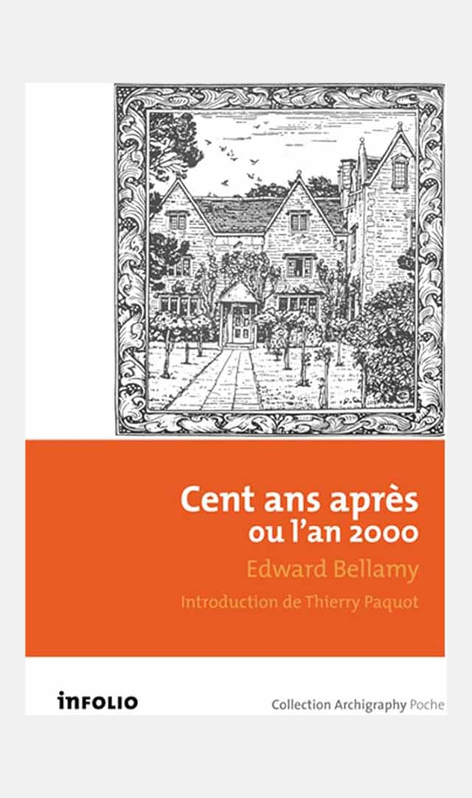
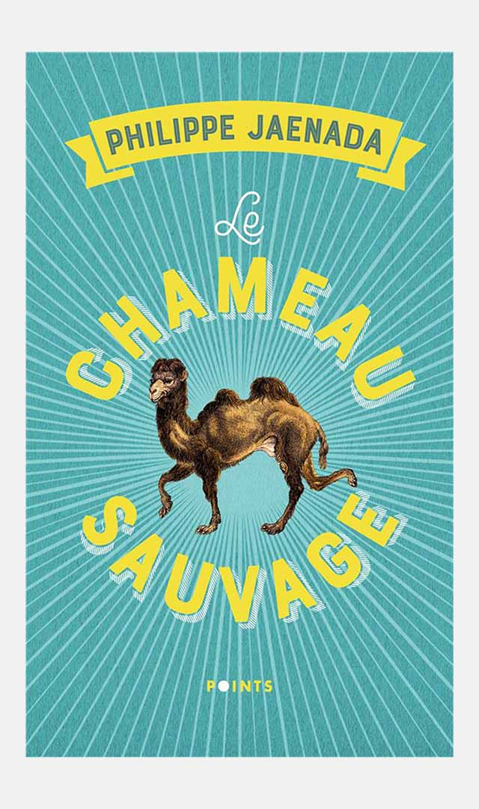
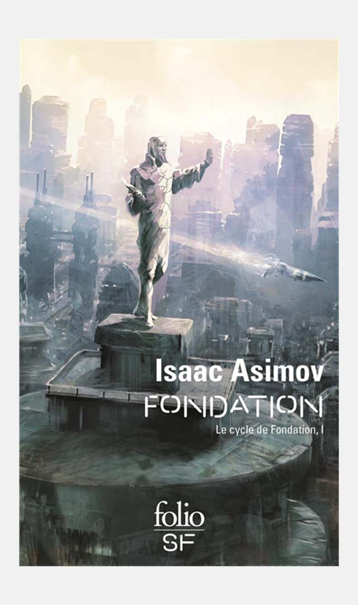
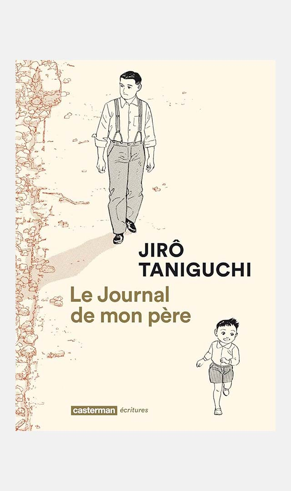
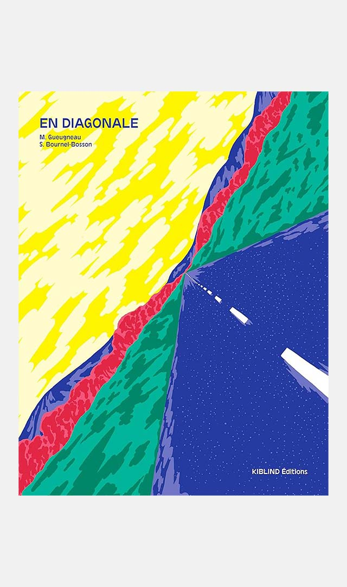

Références
Cette page rassemble mes œuvres préférées, servant de références dans mon travail.
Cette page évolue constamment.
Dernière mise à jour : 13 février 2024
Livre

Cent ans après ou l'an 2000
Edward Bellamy, 1888.

Le chameau sauvage
Philippe Jaenada, 1997.

Le cycle de Fondation
Isaac Asimov, 1942 - 1986.

Le journal de mon père
Jirō Taniguchi, 1994.

En diagonale
Simon Bournel-Bosson & Maxime Gueugneau, 2018.
à propos


Site conçu par Amaury Hardré, 2024
références
cinéma
musique
peinture
jeu